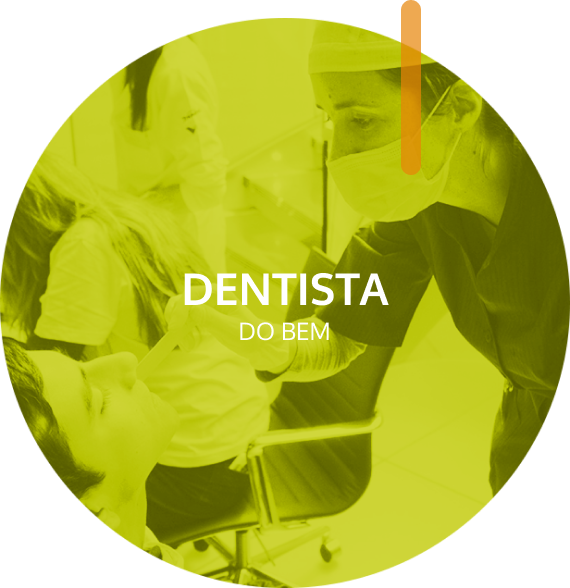

Dentista do Bem

O Dentista do Bem é o principal programa da TdB, destinado a crianças e adolescentes em situação de vulnerabilidade social na faixa dos 11 a 17 anos. Os nossos beneficiários possuem graves problemas bucais e não têm condições financeiras de pagar pelo tratamento. Após serem selecionados e entrarem no programa, os jovens recebem atendimento odontológico e gratuito – independente da complexidade dos casos – até completarem 18 anos.
Saiba mais